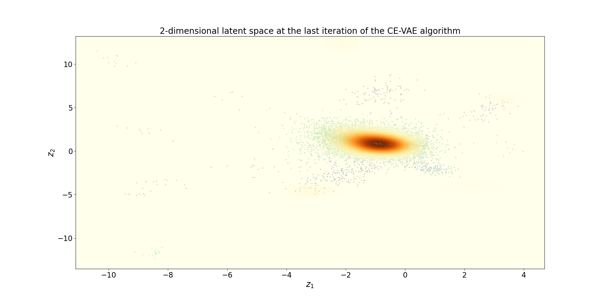

Note
Go to the end to download the full example code
Example 2: Use of CEISVAE and modification of VAE parameters¶
This example aims to illustrate how to use the otCEISVAE module and the modification of the VAE parameters.
Loading python modules
import numpy as np
import openturns as ot
import otCEISVAE
from matplotlib import pyplot as plt
from matplotlib import cm
ot.RandomGenerator.SetSeed(1)
The considered reliability analysis problem is defined for a dimension d=100
def limitStateFunc(x):
xnp = np.array(x)
d = len(xnp)
xnp_squared = np.power(xnp,2.)
term1 = np.sum(xnp_squared[1:])
g = 0.1*term1-xnp[0]-4.5
return [g]
Definition of the parameters for CE-IS using VAE
d = 100 # dimension of the reliability analysis problem
#### Creation of an OpenTURNS Python function of input dimension d and output dimension 1
g = ot.PythonFunction(d,1,limitStateFunc)
#### Creation of the PDF of input random vector
phi = ot.Normal(d)
#### Definition of threshold
S = 0.
#### Definition of the failure event
vect = ot.RandomVector(phi)
output = ot.CompositeRandomVector(g, vect)
myEvent = ot.ThresholdEvent(output, ot.Less(), S) # definition of the threshold event
#### Parameters for the Cross-Entropy Importance Sampling
quantileLevel = 0.25 # quantile level for the steps
nbIS = 10000 # number of Importance Sampling sample
maxNbSim = 1e5 # maximum number of limit state function evaluations
#### Parameters for the Variational AutoEncoder
latentDim = 2 # dimension of the latent space for the VAE
nbCompVampPrior = 75 # number of components for the VampPrior
Definition of the algorithm
myAlgo = otCEISVAE.CEISVAE(myEvent,
quantileLevel,
nbIS=nbIS,
latentDim=latentDim,
nbCompVampPrior=nbCompVampPrior,
maxNbSim=maxNbSim)
Modification of the VAE parameters: it is possible to modify the dimension of the two VAE intermediate layers and to tune the parameters of training (number of epochs and batch size) and of the Adam optimizer (Beta1, Beta2, LearningRate, Epsilon) as follows :
myAlgo.setVAEdimLayer1(32)
myAlgo.setVAEdimLayer2(16)
myAlgo.setVAEEpochs(100)
myAlgo.setVAEBatchSize(100)
myAlgo.setVAEBeta1(0.9)
myAlgo.setVAEBeta2(0.999)
myAlgo.setVAEEpsilon(1e-7)
myAlgo.setVAELearningRate(0.001)
Run of the algorithm and get the result
myAlgo.run()
result = myAlgo.getResult()
/usr/local/lib/python3.9/dist-packages/keras/src/optimizers/base_optimizer.py:774: UserWarning: Gradients do not exist for variables ['dense_39/kernel', 'dense_39/bias'] when minimizing the loss. If using `model.compile()`, did you forget to provide a `loss` argument?
warnings.warn(
/usr/local/lib/python3.9/dist-packages/keras/src/optimizers/base_optimizer.py:774: UserWarning: Gradients do not exist for variables ['dense_49/kernel', 'dense_49/bias'] when minimizing the loss. If using `model.compile()`, did you forget to provide a `loss` argument?
warnings.warn(
/usr/local/lib/python3.9/dist-packages/keras/src/optimizers/base_optimizer.py:774: UserWarning: Gradients do not exist for variables ['dense_59/kernel', 'dense_59/bias'] when minimizing the loss. If using `model.compile()`, did you forget to provide a `loss` argument?
warnings.warn(
Probability estimate, variance and simulation budget
print('Probability of failure :',result.getProbabilityEstimate())
print('Number of steps in the CE-IS using VAE algorithm :',result.getStepsNumber())
print('Simulation budget :',result.getOuterSampling())
print('Variance estimate :',result.getVarianceEstimate())
Probability of failure : 0.00039156483150321037
Number of steps in the CE-IS using VAE algorithm : 4.0
Simulation budget : 40000
Variance estimate : 3.583934652321354e-08
Draw of the VAE latent space (only possible if VAE latent space is of dimension 2)
fig, ax = result.drawLatentSpace()

The figure represents the CE-IS samples at the final iteration in the latent space (the PDF and the samples).
Total running time of the script: (7 minutes 28.218 seconds)